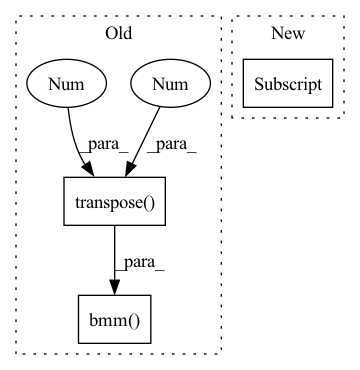

Pattern ID :2728

Before Change
// h = torch.stack([h1, h2, h3, h4], dim=1)
h = torch.stack([h1, h4], dim=1)
attn_weights = F.softmax(self.gnn_attns[l](h), dim=1)
attn_weights = attn_weights.transpose(-1, -2)
print("attn_weights.shape:", attn_weights.shape)
print("h: ",h.shape)
h = torch.bmm(attn_weights, h)[:, 0]
h = self.norm_layers[5 * l + 4](h)
h = self.dropout(h)
After Change
h1 = self.norm_layers[5 * l](h1)
h1 = F.elu(h1)
h2 = self.graphsage[l](blocks[l], h)
h2 = self.norm_layers[5 * l + 1](h2)
h2 = F.elu(h2)
In pattern: SUPERPATTERN
Frequency: 3
Non-data size: 3
Instances
Fragment ID: 9040553
Project Name: langgege-cqu/maxp_dgl
Commit Name: 4c0c32b85678b9d29f17c435092a48969ab58f7f
Time: 2021-11-10
Author: 814112480@qq.com
File Name: maxp_model/unimp.py
M Class Name: GNNModel
N Class Name: GNNModel
M Method Name: forward(4)
N Method Name: forward(4)
M Parent Class: nn.Module
N Parent Class: nn.Module
M File Name: maxp_model/unimp.py
N File Name: maxp_model/unimp.py
M Start Line: 185
M End Line: 205
N Start Line: 183
N End Line: 209
'>
Before Change
src_mask = src_mask.float().unsqueeze(-1) // [batch, seq_len, 1]
mel_mask = mel_mask.float().unsqueeze(-1) // [batch, mel_len, 1]
attn_mask = torch.bmm(src_mask, mel_mask.transpose(-2, -1)).bool() // [batch, seq_len, mel_len]
output, attn = self.attention(q, k, v, mask=attn_mask)
After Change
k = self.w_ks(mel_encoding)
v = self.w_vs(mel_encoding)
src_len, mel_len = src_mask.shape[1], mel_mask.shape[1]
src_mask_ = src_mask.unsqueeze(-1).expand(-1, -1, mel_len) // [batch, seq_len, mel_len]
mel_mask_ = mel_mask.unsqueeze(1).expand(-1, src_len, -1) // [batch, seq_len, mel_len]
'>
Fragment ID: 9040554
Project Name: keonlee9420/parallel-tacotron2
Commit Name: 1f98efe5d09778b2b77e291aff63ef6e497c6bb9
Time: 2021-07-26
Author: 1531820402@qq.com
File Name: model/blocks.py
M Class Name: VariableLengthAttention
N Class Name: VariableLengthAttention
M Method Name: forward(5)
N Method Name: forward(5)
M Parent Class: nn.Module
N Parent Class: nn.Module
M File Name: model/blocks.py
N File Name: model/blocks.py
M Start Line: 271
M End Line: 273
N Start Line: 271
N End Line: 273
'>
Before Change
s = student.unsqueeze(0) - student.unsqueeze(1)
if normalize:
s = F.normalize(s, p=2, dim=2)
s = torch.bmm(s, s.transpose(1, 2)).view(-1)
return F.smooth_l1_loss(s, t, reduction="mean")
After Change
t = t / (t_mean + 1e-7)
s = pairwaise_distance(student)
s_mean = s[s > 0].mean()
s = s / (s_mean + 1e-7)
return F.smooth_l1_loss(s, t)
'>
Fragment ID: 9040558
Project Name: sforaidl/kd_lib
Commit Name: 28d2e68c71f5d14e9784f85a4f5c6241b858089b
Time: 2020-08-28
Author: khizirsiddiqui@gmail.com
File Name: KD_Lib/KD/vision/RKD/loss_metric.py
M Class Name: RKDDistanceLoss
N Class Name: RKDDistanceLoss
M Method Name: forward(3)
N Method Name: forward(4)
M Parent Class: nn.Module
N Parent Class: nn.Module
M File Name: KD_Lib/KD/vision/RKD/loss_metric.py
N File Name: KD_Lib/KD/vision/RKD/loss_metric.py
M Start Line: 25
M End Line: 43
N Start Line: 37
N End Line: 43